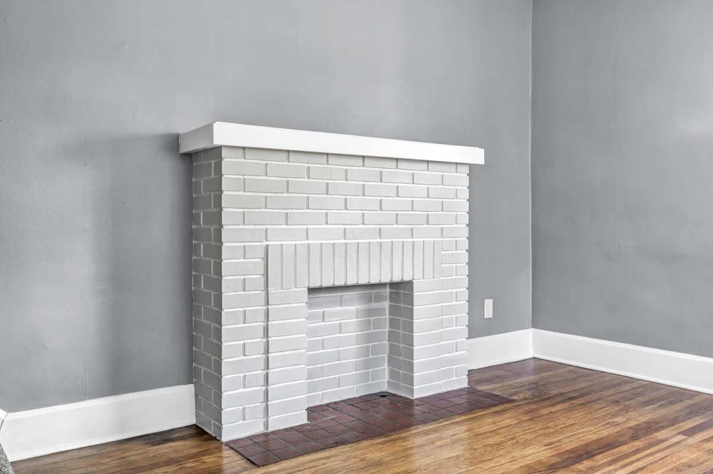
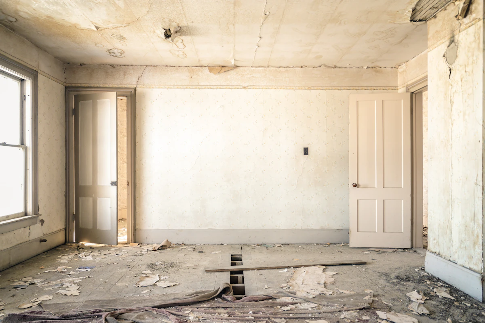
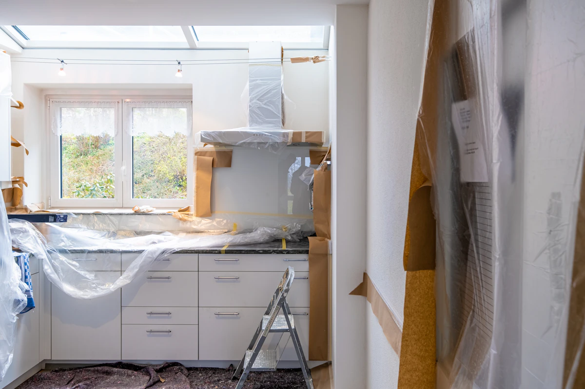

À lire : ces projets sont imaginés pour la démonstration. Les photographies sont libres de droits (Unsplash) et ne montrent pas des chantiers réalisés par Maison Tessaron.
 Projet illustratif
Projet illustratifPièce vide, murs et moulures
Lessivage, rebouchage, deux couches en finition mate.
 Projet illustratif
Projet illustratifPièce de vie, mur d’accent
Ponçage, sous-couche, deux couches en finition velours.
 Projet illustratif
Projet illustratifMurs sombres et soubassement
Reprise des boiseries, peinture satinée sur le bas de mur.

Projet illustratifCheminée en brique peinte
Dégraissage, impression, peinture pour maçonnerie.

Projet illustratifPièce avant remise en état
Enduit de lissage, ponçage, murs et moulures repeints.

Projet illustratifCuisine protégée avant peinture
Protection, lessivage et reprise des supports.
Parlons de votre chantier.
Décrivez les pièces, l’état des murs et le calendrier souhaité. Un devis détaillé précise les travaux, les produits et les finitions.